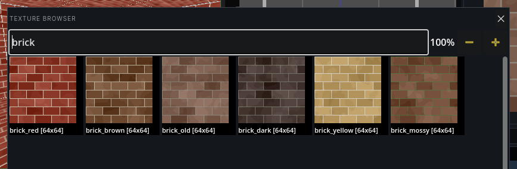
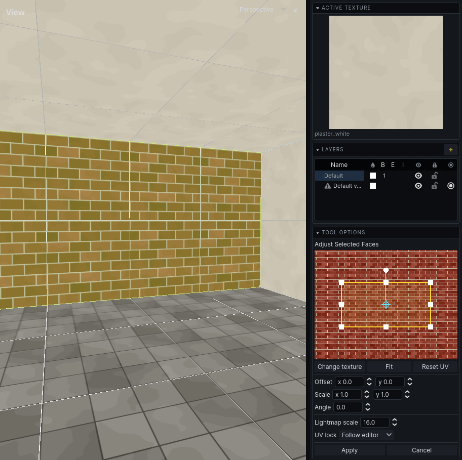

Texturing
Textures are chosen by name from the textures your game provides. What names mean (alpha-masked, sky, emissive) is in Textures.
Apply a texture
- Select brushes, or faces in face mode (
Q). - Press
Tto open the texture browser. - Click a texture. It becomes the active texture and goes on everything selected.
The active texture shows at the top of the right panel; click it to open the browser. New brushes take it. Cmd T puts it on the selection again without opening the browser.

Texture browser
| Do | How |
|---|---|
| Filter | type; the field has the keyboard whenever the browser opens, its last filter selected to be typed over. Words separated by spaces match in order, anywhere in the name |
| Bigger / smaller pictures | + and − at the bottom right, or Ctrl and the mouse wheel |
| Close | Esc, or the ✕ button |
Pictures are drawn to scale: a texture twice the size in the world is twice the size in the browser. Each tile shows the name and pixel size. The bar along the bottom counts the textures the filter leaves, and a ring there fills while they are still loading.
Adjust a face's texture
- Select the faces to adjust in face mode (
Q). With brushes selected instead, every face of them is adjusted. - Press
F. The Face UV panel opens in the tool options. - Adjust, any of these ways:
- Drag the texture in the panel's preview. The face stays still and the texture moves under it. Drag the handles to turn and stretch it.
- Type Offset, Scale and Angle.
- In a view, press
G,RorSand move the mouse to offset, rotate or scale. Arrow keys nudge by one grid step. - Press
Enter, click in a view, or click Apply.Escor Cancel puts it back.
The whole session is one undo step.
In the preview, drag with the right mouse button to pan and use the wheel to zoom. Fit re-centres the view. Reset UV puts the texture square on the face again: no offset, rotation or scale. Change texture opens the browser for the selected faces.
To line a texture up with the faces' edges:
| Button | Does |
|---|---|
| Left, Right, Top, Bottom | slides the texture so a tile's edge meets the faces' edge on that side |
| Centre | slides it so a tile's middle is at the faces' middle |
| Stretch to fit | stretches the texture, turned as it is, so one tile covers the faces exactly: a sign on a wall, a panel on a door |

The panel also sets the face's Lightmap scale: how coarse its baked light is. See Baking.
UV lock
With UV lock on (toolbar, or Edit → Lock Texture to Geometry), a texture travels with its face when you move, rotate or reshape the brush. With it off, the texture stays put in the world and the face slides across it.
A face can overrule the editor. In the face panel, set UV lock to Locked or Unlocked; Follow editor goes back to the toolbar setting.
While the face tool is running, faces with their own setting are marked: blue for locked, orange for unlocked.
Copy one face's texture to others
- Tap
Qfor face mode and click the face that looks right. - Press Copy in the Face UVs panel, or
CmdShiftC, to copy its texture and UVs. - Hold
Shift, press the mouse button on a face and drag across the others: every face the cursor crosses is painted. Or select faces and pressCmdShiftV. - Press Clear in the panel when done, so a click is a plain click again.
The Face UVs panel is under Tool Options while the Select tool picks faces, and says what you have copied. Each drag is one undo step. The texture comes along with the UVs; untick Copy texture to paint UVs alone.
Painted onto a face that shares an edge with the one you copied, the texture is folded round that edge, so it runs on across the corner as if the two faces were one sheet: copy the top of a step and paint its front, and the planks carry on down it. Painting UVs alone copies the numbers exactly instead.
Replace a texture everywhere
- Click a face that has the texture to replace (or select brushes: every texture on them is replaced).
- Pick the new texture so it is the active texture.
- Choose Selection → Replace Texture in Map.
Every face in the map with the old texture gets the new one, in one undo step. A texture your game no longer has is replaced too, since faces are matched by name.
Smooth faces
A curve built from flat faces - a pillar, an arch, rolling ground - is lit face by face, so it shows as strips or triangles. Select the faces, or the brushes, and choose Selection → Smooth Faces, or tick Smooth in the face tool's panel: they are lit and drawn as one surface. It is checked when everything selected is smooth, and choosing it again makes them flat.
Smooth faces blend wherever they meet, across brushes too, but not where they bend more than 60 degrees: a smooth pillar keeps the edge round its top. A brush entity's faces blend only with each other. Terrain is smooth from the start, and so are the sides of a cylinder or cone and the curve of an arch, unless Smooth is unticked in the tool's panel. Smooth Face Tint in the 3D view's menu tints every smooth face, to see which they are.
Smoothing changes how the bake lights a face, so bake again to see it in the lightmap. Detail faces that are smooth, or lie in one plane, also share their lightmap where they meet, so the light runs on across the edge between them.
Faces that look into the void
A see-through (alpha-masked) texture on a room's wall shows the rock behind it: the outside of the world, or nothing at all. The 3D view draws such walls red. Give the wall an opaque texture, or carve a room behind it so the wall becomes an opening. O hides these marks with the other warnings.